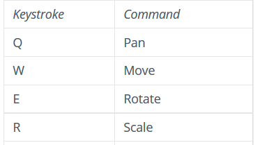

The interface in Unity is organized as a series of "windows" laid out in an adjustable grid. Windows can be resized and dragged around to a position that makes sense for your workflow. Each has at least one tab which identifies the and in the upper right hand corner a dropdown menu will let you close, maximize or add a new tab.
Unity Documentation: Learning the Interface
./Assets which can be dragged into the Hierarchy, Scene, or certain places in theDebug.Log("hello console");Now that you've got some sense of the interface, lets make some GameObjects!
In the main file menu, select GameObject > 3D Object > Cube. You should see a cube appear in the Scene window. If you do not see it, find the Cube in the Hierachy window and double click on it. That should bring the Cube into focus in the Scene view.
Notice that in the Inspector window, under the object name are a set of rows for Transform, MeshFilter, BoxCollider, MeshRenderer, and DefaultMaterial. These are all Components. Each has different properties available in the editor but they all have a link to documentation and a menu in their upper right corner.
Add some additional 3D objects to the scene such as a Sphere and a Cylinder.
Now, try creating an Empty. Notice that it appears in the Hierarchy tab as a GameObject and that it appears in the Inspector as a Transform.
Just as the fundamental unit of a GameObject is a Transform, the fundamental actions you'll take on GameObjects in the Scene window are manipulations of that Transform.
The most obvious way to switch between these methods of manipulation is the Toolbar. When you click on one of the icons in the upper left, it changes how your mouse behaves in the Scene window (and )
But you don't really want to be sliding your mouse up to the Toolbar every time you want to move and rotate an object, do you? Of course not. The faster way to switch modes is to utilize the provided hotkeys. They are arranged optimized for right-handed users of QWERTY keyboards, but even if that's not you, they can still be really useful, so it's worth building the muscle memory to use them.
hotkey table
The complete list of hotkeys can be found at Unity Documentation: Hotkeys
Take a few minutes to play with the position, rotation, and scale of your objects (you may want to )
Notice that the colored lines correspond to the axis key in the upper right hand corner: red => x, green => y, blue => z. The direction they are pointing is the positive number.
If you maximized a Scene tab, select from the upper right corner again to unmaximize.
Once you have a few objects in scene, you can see them stacking up in the Hierarchy view, but right now the objects are probably all children of the scene itself. You can place objects in a hierarchy by dragging and dropping them in hthat window.
Let's go back to our basic objects and arrange them with a little more intention.
Now you should have a set of five objects arranged in a hierarchy where:
[Scene]
|-- Axel
|--Gear
|-- Sphere
|-- Sphere
|-- Sphere
OK, enough with these cubes, spheres and cylinders - what else can we put in our scene? As you're getting started, it's much easier to prototype with creative commons or other free-as-in-beer licensed assets than to learn how to create them from scratch. You can find some suggestions for places to find assets of varying quality in the resources section.
When you import assets from other sources, however, they may not be optimized for Unity (much like free stock photography vs paid stock photography, good optimization is one of those things you should look for and expect as your project gets to a place you are willing to spend more money for assets). Here's a couple of things you may have to manage as you import things from different sources:
Unity can read many file types but sometimes you'll come across something that doesn't show up in the Assets directory of the Project pane the way you expect. One of the common formats is .stl (i.e. STereoLithograhy/Standard Triangle Language which are produced by CAD design programs and can be used for 3D printing. You can convert those in a program like Blender to a more generic format like .obj (i.e. Wavefront).
Unity uses scale of 1 meter per unit. If the designer built an asset with a different scale in mind, you'll end up with either a giant or tiny object. You can resolve those issues by change the object in a 3d-editing application like blender, but the quick and easy way to deal with that in unity is to use the hierarchy to your advantage. If scale is the only issue, click on the asset in the Project view and change the Scale Factor in the Inspector. For more complex arrangement, create an empty GameObject at [0,0,0] and name it something meaningful like "AwesomeSword". Make the object you imported a child of the empty object, then scale it to the size you want and then move/rotate it so that it is correctly oriented and will rotate the way you expect when you manipulate the parent object.
If you are scaling the object uniformly, you can assign this in the Inspector view before you drag the asset from the Project view into the Scene.
Try this now with Morrowwind Daedric Claymore by Andrea Mendicino. You can find it in the ./pre_assets directory. It was originally downloaded from GrabCAD and converted from a .stl file to a .obj file in blender. You may want to visit there later and browse some of the art people have created there.
Since we are going to be using some specialized scripts for some later functionality, make sure the handle is pointed in the positive z (blue arrow) direction of your parent object and the blade is pointed to the negative z (opposite the blue arrow) direction.
Another issue that can come up is assets that have too many triangles. You'll mostly notice this in terms of performance problems. The more triangles, the more calculations that have to be performed in order to render that object.
If you want to see how many triangles your object has, look for the mesh part in the Project view. When you click on it, you'll see a count in the Inspector tab. You can see that this the claymore has a lot at ~600,000 and its handle decoration uses another ~300,000.
Optimizing the number of triangles is a longer topic that involves both editing the mesh itself and using tricks with other topics we'll touch on later like textures and shaders to achieve similar details. If you want to begin exploring techniques for this, you can open up Blender and use its decimate feature:
Outliner (like Unity's Hierarchy view)Properties view to change the menu optionsAdd Modifier > DecimateFile > Export > Wavefront (.obj) to save it to your Unity project Assets directory(or you can just use the _low_poly.obj version from the ./pre_assets directory)
If an object shows up bright purple in the scene, it generally means that it references a material, but that material cannot be found. Check to see if you missed importing something - you may need to drag and drop materials to different meshes in the Hierarchy View or the Inspector.
If you can't find it, create a new material and assign it in the Inspector (it will be listed in the Mesh Renderer). You can use the Albedo Map to assign simple colors.
If you don't have a Mesh Renderer, something really went wrong but you still might be able to resolve it by clicking Add Component and adding one.
In the Project window (i.e your ./Assets directory), certain subdirectory names function in special ways: Editor, Gizmos,Resources,Plugins, StandardAssets, and StreamingAssets. You can read the details about what each one is for in Unity Documentation: Special Folders but for the most part it's enough to know that they will be interpreted by the editor and the compiler in specific ways (for instance, the compiler ignores everything in ./Editor and ./Gizmos) so name your organizational subdirectories something different. If you see names like Prefabs,Scenes or Levels, Materials, and Textures, those are common conventions but don't perform any function beyond making it easy for other people to understand your project.
You get a * indicator in the main Unity window and the Hierarchy window when your current scene isn't saved but it's not always obvious when you've changed a project-level settings. The main save command, Ctrl/Command + S will save the scene (i.e. MyAwesomeScene.unity)
Under the File menu there is also an option to Save Project which will save options such as Tags, BuildSettings, Lighting, etc. These are all stored in ./ProjectSettings/*.assets files outside of the ./Assets directory. Failure to commit these changes to git or failure to notice local changes to a pulled branch are frequently the cause of many headaches when working on Unity projects with others.